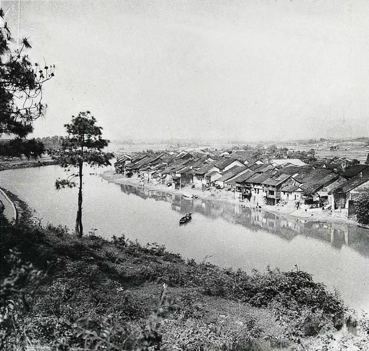
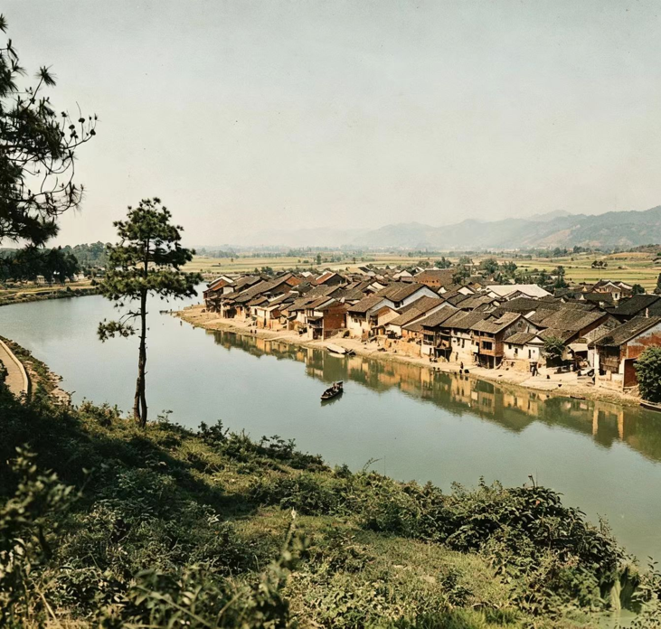

HISTORICAL IMAGE · RESTORATION
四渡赤水
拖动中间的滑块，比较历史影像原图与修复上色版本。


左：黑白原图右：AI 修复上色图
图片说明：修复上色图为历史影像的数字修复版本。请以原始史料为准。
继续查看：遵义会议影像对比 →
HISTORICAL IMAGE · RESTORATION
拖动中间的滑块，比较历史影像原图与修复上色版本。


图片说明：修复上色图为历史影像的数字修复版本。请以原始史料为准。
继续查看：遵义会议影像对比 →